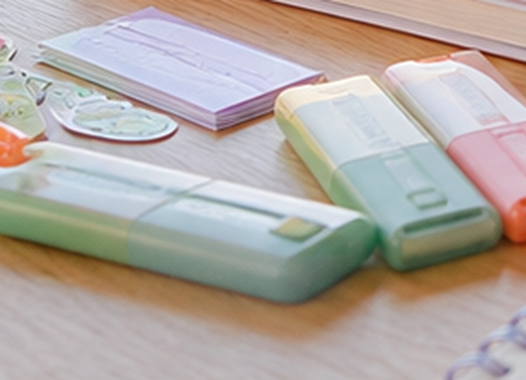
Alta rotación
Resaltadores pastel
SKU base para study vibes, apuntes bonitos y combos de productividad.
Catálogo visual
Una vista separada para presentar los productos por familias, con imagen descriptiva, rol comercial y criterio de compra. Sirve para decidir qué traer, qué probar en contenido y qué convertir en combo.
Productos de rotación alta, fáciles de mostrar en video y buenos para kits universitarios.

SKU base para study vibes, apuntes bonitos y combos de productividad.
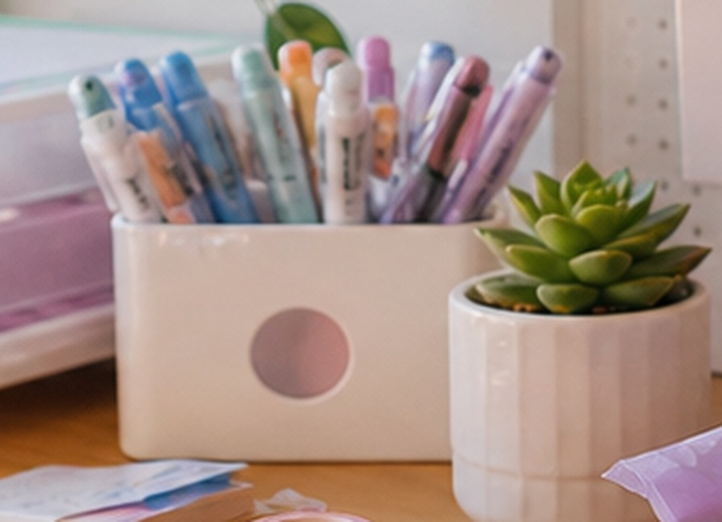
Fáciles de vender por diseño, color, forma y precio accesible.
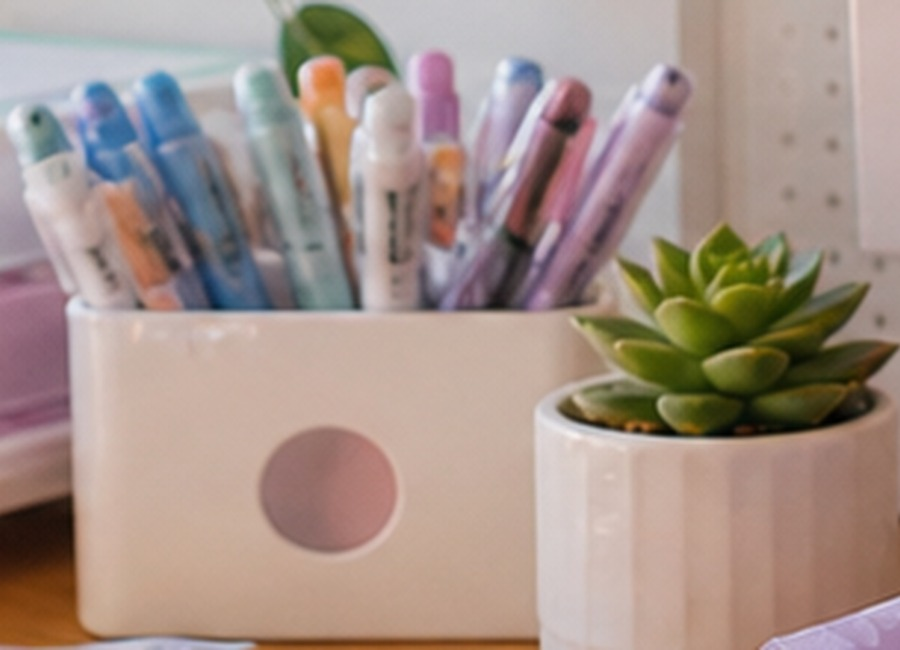
Perfectos para lettering, títulos de apuntes y demostraciones en Reels.
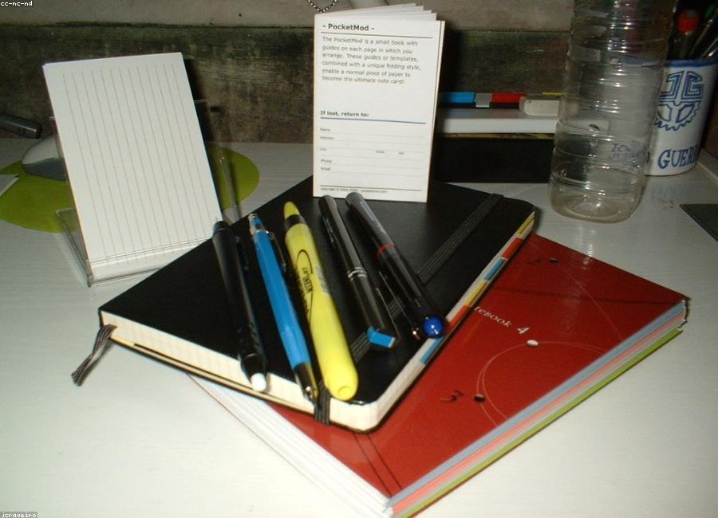
Producto pequeño, útil y económico para vender por diseño diferencial.
La familia más emocional: se compra para crear, decorar, coleccionar y regalar.
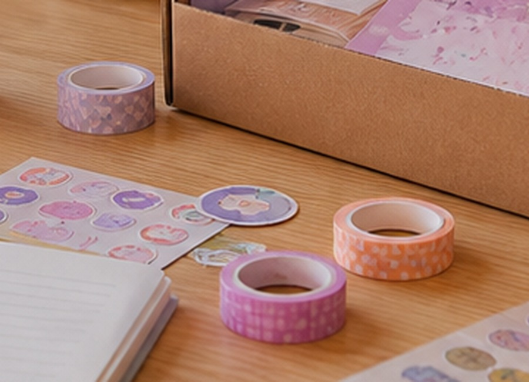
Pequeños, coleccionables y buenos para armar paquetes temáticos.
Entrada natural para bullet journal, lettering y planeación semanal.
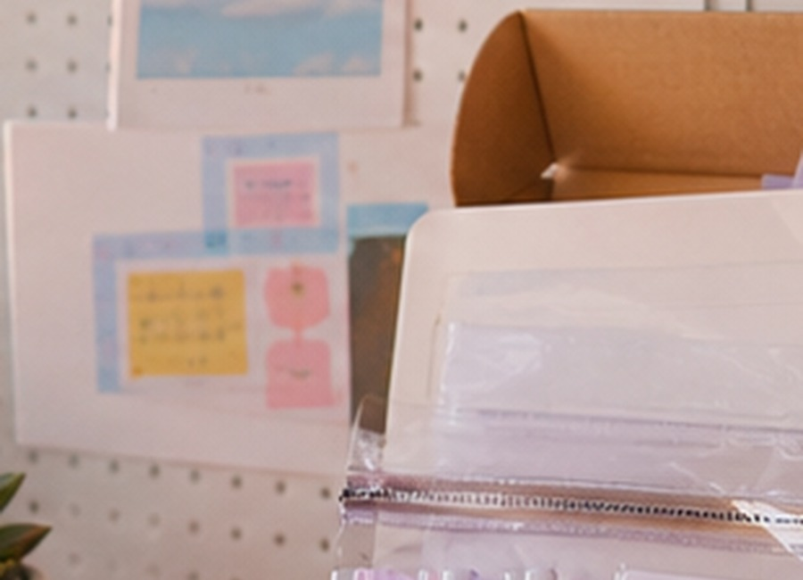
Buen complemento para agendas, escritorios, estudio y oficina.
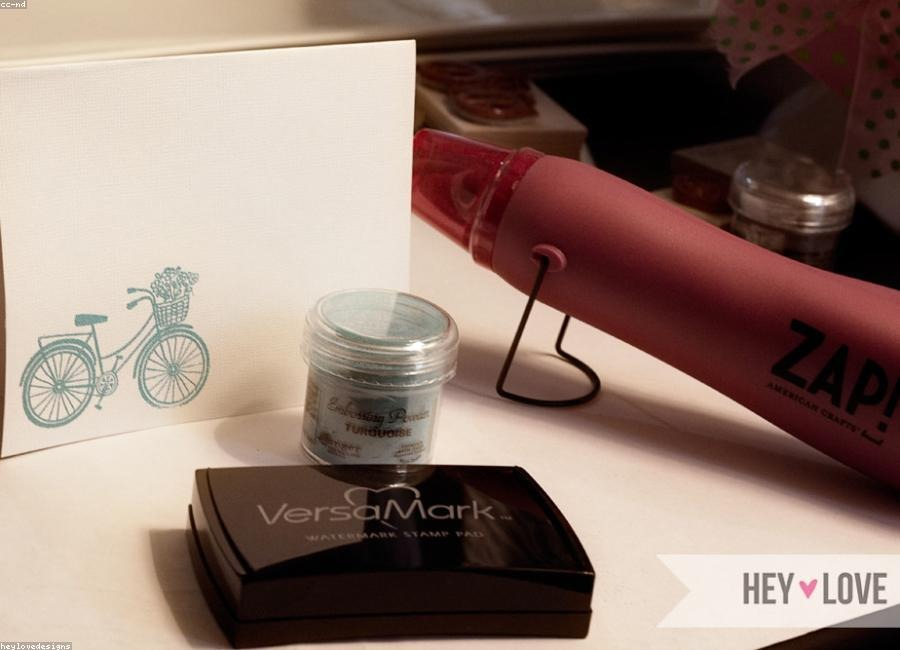
Item diferencial para elevar combos de journaling y regalos creativos.
Productos que aumentan ticket promedio porque resuelven orden, transporte y cuidado del material.
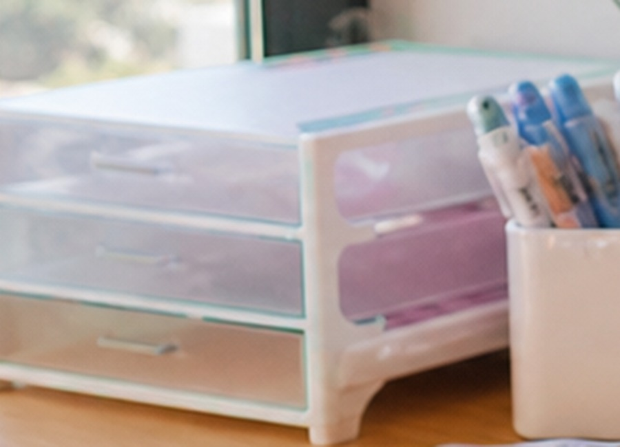
Visuales, útiles y buenos para contenido de antes/después de escritorio.
Se venden bien con lapiceros, marcadores y kits escolares.
Ideales para subir el valor del carrito sin aumentar mucho el flete.
Permiten compras repetidas: hojas, inserts, minas, cintas y recargas.
Para stickers, tarjetas, apuntes, recibos, separadores y papelería pequeña.
La parte donde la marca gana margen: curaduría, empaque, contenido y sensación de compra.
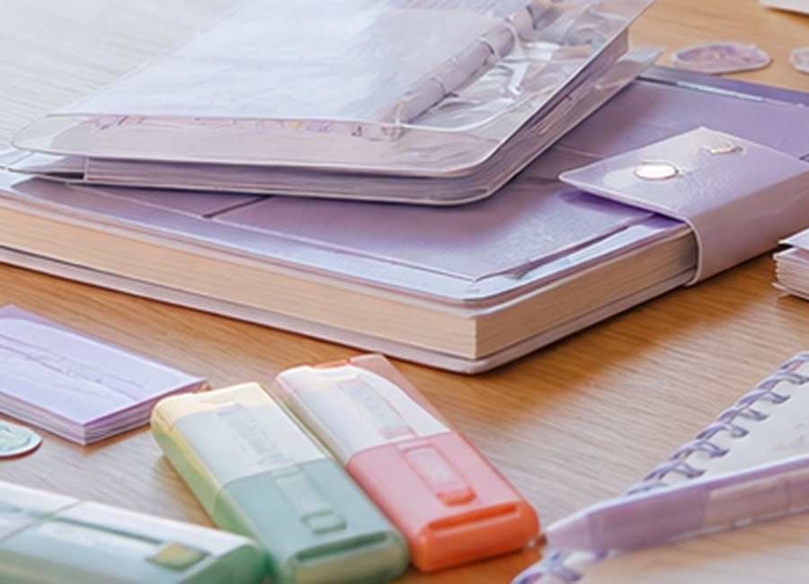
Funcionan muy bien por temporada, regalo y hábitos de productividad.
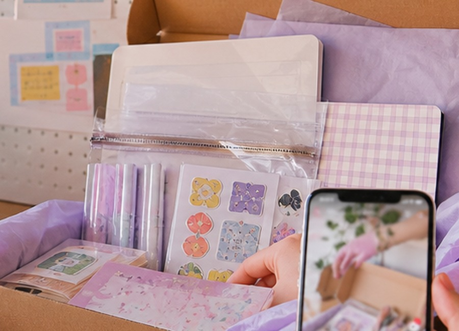
Desk pads, mini lámparas, soportes y detalles para escritorio aesthetic.
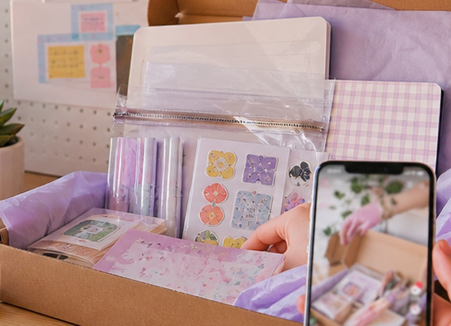
Combos curados que se sienten premium y facilitan compra emocional.
Para el primer pedido, escoger 2-4 productos por familia, pedir muestras, grabar contenido antes de comprar volumen y reordenar solo los SKUs que roten. Las imágenes son referencia visual para prototipo; para publicar la marca conviene usar fotografía propia o imágenes con licencia comercial verificada.
Volver al método KAWAIISupuestos comerciales
Los valores combinan precios observados en marketplaces colombianos, productos importados comparables y lógica de piloto para una marca nueva en Bogotá. Ajustar cada cifra con cotizaciones reales, DIAN, flete, pauta y prueba de demanda.
Producto por producto: qué vender, qué variantes traer, cuánto podría costar y cuántas unidades movería una marca nueva si trabaja contenido y activaciones.
Base de contraste: listados de Mercado Libre Colombia para resaltadores pastel, papelería kawaii, kits escolares, bullet journal, brush markers y cintas correctoras; más tiendas de papelería colombianas para correctores y sets. Los precios cambian por vendedor, envío, descuentos y origen local/internacional.